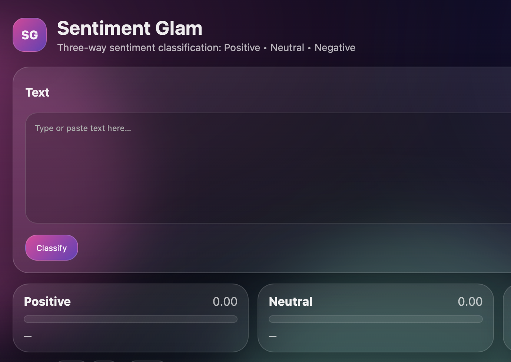

A Computer Science student and Doctor of Medicine exploring the intersection of technology, artificial intelligence, and healthcare.
Get to Know MeMy background connects two fields that I care deeply about. Medicine taught me to approach complex problems with care, analytical thinking, and attention to detail. Computer Science gives me new tools to explore those problems through programming and computational methods. I'm especially interested in the possibilities of artificial intelligence in healthcare.
I completed a six-year medical education and earned a Doctor of Medicine degree. My studies covered anatomy, physiology, pathology, diagnostics, and clinical reasoning, supported by practical experience in a hospital environment.
My interest in technology led me to expand my medical background with Computer Science. I became interested in how algorithms, software, and artificial intelligence can help solve practical problems, particularly in health-related fields.
I am in the final stage of my Bachelor's studies at the Faculty of Informatics, supported by the Stipendium Hungaricum scholarship. I study programming, algorithms, data structures, databases, software development, and artificial intelligence.
My ongoing Bachelor's thesis explores deep learning for respiratory sound classification. It brings together my experience in medicine and my growing knowledge of machine learning and software development.

I enjoy going to the gym and strength training. Staying active helps me build consistency and balance.
Living and studying in an international environment has strengthened my interest in different cultures. I'm also learning Hungarian.
I like discovering new places, seeing different environments, and learning from people with different backgrounds.
I remain curious about medical research, scientific discoveries, and ways that new knowledge can improve people's lives.
I enjoy learning how technology works, exploring new programming concepts, and finding practical uses for AI.
I like cooking and experimenting with food. It's a creative way to relax outside my academic work.